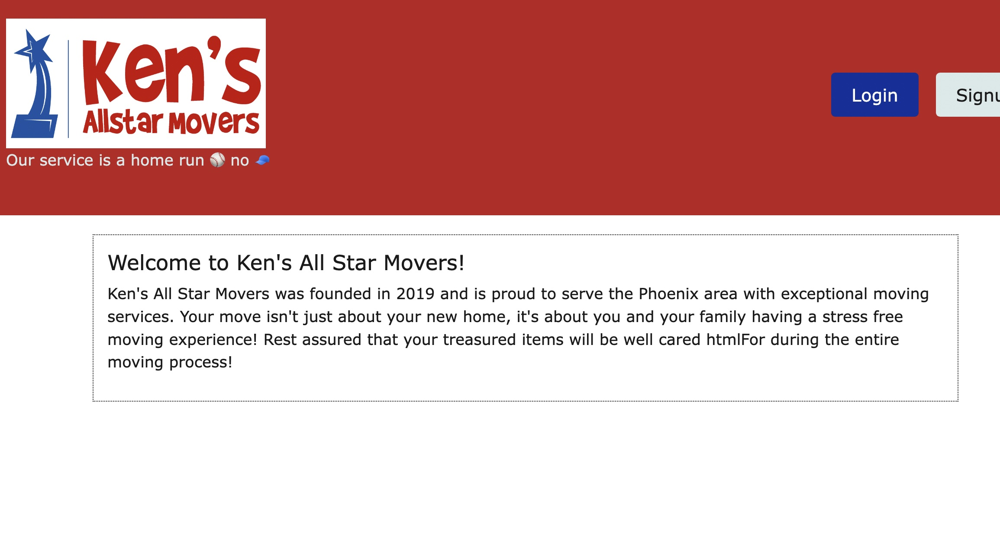

A Prototype For A Moving Service

A final project of sorts that was put together featuring me and more of my friends/former classmates ("From the team that brought you Reci-Pro!").
One among us mentioned a friend with a moving company and before we knew it we proceeding with this idea of a would-be client and set out to create a hypothetical website for this company if they were to have hired us to do so. This created scenario was perfect in coming up with both a client and assignment for said client. The site serves as the perfect place to book or schedule moving appointments with the company as well as keep track of moving history with the company, and again, with an emphasis on user interconntectivity, you can communicate with other users or leave reviews or comments about your own experiences.
This project is a Full Stack MERN web application, with both front-end and back-end code, client and server sides. My contributions to the concept aside, alot of my duties and expertise covered the models and the seeds for both client and server side.